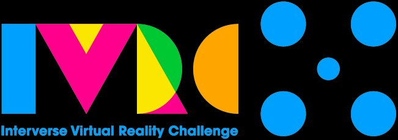

France and Japan, 30 years of student VR exchange. It's your team's turn to write the next page — in Toyama, a vibrant city on the Sea of Japan coast backed by the 3,000m Japanese Alps.
日本とフランス、学生VR作品交換の30年の歴史。その新たな1ページを、あなたのチームが日本海側の中核都市・富山（Toyama）で刻む番です。
France et Japon, 30 ans d'échanges de projets VR étudiants. C'est à votre équipe d'écrire la prochaine page — à Toyama, ville dynamique face à la mer du Japon, au pied des Alpes japonaises culminant à 3 000 m.
IVRC (est. 1993, Japan) and Laval Virtual (est. 1999, France) have been exchanging student VR projects since 2004 — one of the longest-running international student XR exchange programs in the world. Each year, prize-winning teams from one event travel to the other, carrying their creations to new audiences and forging lifelong connections.
IVRC（1993年設立・日本）とLaval Virtual（1999年設立・フランス）は、2004年以来学生VR作品を交換してきました。世界最長級の国際学生XR交流プログラムのひとつです。毎年、一方のイベントの受賞チームがもう一方へ渡り、作品を新しい観客に届け、生涯にわたるつながりを築いています。
L'IVRC (fondé en 1993, Japon) et Laval Virtual (fondé en 1999, France) échangent des projets VR étudiants depuis 2004 — l'un des plus anciens programmes d'échanges XR étudiants internationaux au monde. Chaque année, les équipes lauréates d'un événement se rendent à l'autre, portant leurs créations vers de nouveaux publics et tissant des liens durables.
The Laval Virtual Prize winner at IVRC in Japan receives ¥400,000 to travel to France. The IVRC Prize winner at Laval Virtual in France receives up to €2,500 to travel to Japan. This mutual exchange, renewed for 2026–2028, ensures the next generation of VR creators always has wings.
日本のIVRCでのLaval Virtual賞受賞チームはフランスへの渡航費として40万円を受け取ります。フランスのLaval VirtualでのIVRC賞受賞チームは日本への渡航費として最大2,500ユーロを受け取ります。2026年〜2028年に更新されたこの相互交流により、次世代のVRクリエーターは常に翼を持ち続けます。
Le lauréat du Prix Laval Virtual à l'IVRC au Japon reçoit ¥400 000 pour voyager en France. Le lauréat du Prix IVRC à Laval Virtual en France reçoit jusqu'à 2 500 € pour voyager au Japon. Cet échange mutuel, renouvelé pour 2026–2028, assure que la prochaine génération de créateurs VR ait toujours des ailes.
Present your project at the IVRC Final Stage as an official challenger alongside top student teams from Japan and beyond.
日本のトップ学生チームとともに、IVRC本選で公式チャレンジャーとしてプロジェクトを発表。
Présentez votre projet à la finale de l'IVRC en tant que challenger officiel aux côtés des meilleures équipes du Japon.
Up to €2,500 from Laval Virtual. With additional grants and personal funding, teams can also enjoy university visits and travel experiences across Japan.
Laval Virtualから最大2,500ユーロ。他の支援や個人の資金を加え、大学訪問や日本各地の旅行体験も可能です。
Jusqu'à 2 500 € de Laval Virtual. Avec des aides supplémentaires, les équipes peuvent aussi visiter des universités et voyager à travers le Japon.
A legendary experience in a charming Japanese regional city — the Japanese Alps, fresh seafood, and a warm VR community await.
魅力的な日本の地方都市での伝説的な体験 — 日本アルプス、新鮮な海の幸、そしてあたたかいVRコミュニティが待っています。
Une expérience légendaire dans une charmante ville régionale japonaise — les Alpes japonaises, des fruits de mer frais et une communauté VR chaleureuse vous attendent.
IVRC is operated as a subcommittee of the Virtual Reality Society of Japan (VRSJ), Japan's leading academic body for VR. IVRC 2026 will be held as a joint event within the VRSJ Annual Conference (Sept 6–9) — Japan's largest domestic VR conference, with approximately 1,000 academic researchers and professionals expected. Think of it as the Japanese equivalent of AFRV.
IVRCは学術団体である日本バーチャルリアリティ学会（VRSJ）の下部委員会として運営されています。IVRC 2026は日本VR学会大会（9/6〜9/9）のジョイントイベントとして開催されます。VRにおける国内最大級の学術カンファレンスで、約1,000人規模の参加者が見込まれています。
L'IVRC est géré en tant que sous-comité de la Virtual Reality Society of Japan (VRSJ), le principal organisme académique japonais pour la VR. L'IVRC 2026 se déroulera en tant qu'événement conjoint au sein de la conférence annuelle de la VRSJ (6–9 sept.) — la plus grande conférence VR nationale du Japon, avec environ 1 000 chercheurs et professionnels attendus. L'équivalent japonais de l'AFRV.
A community event with local high school students is planned. You can focus on exhibition setup, but we recommend arriving in Japan by this evening and heading to Toyama.
Optional地元高校生との交流イベントが企画されています。展示設営に集中することも可能ですが、この日の夜までに日本に到着し、富山に向かうことを推奨します。
任意参加Un événement avec les lycéens locaux est prévu. Vous pouvez vous concentrer sur l'installation, mais nous recommandons d'arriver au Japon dans la soirée et de rejoindre Toyama.
FacultatifMorning setup. Judging from 1:00 PM.
Required午前中に準備。午後1時より審査開始。
参加必須Installation le matin. Jury à partir de 13h00.
ObligatoireAll-day exhibition. Awards ceremony ends by 7:00 PM.
Required終日展示。表彰式は19時に終了。
参加必須Exposition toute la journée. Cérémonie terminée à 19h00.
ObligatoireTeardown your exhibition. Ready to connect with the IVRC community, visit universities, and enjoy Toyama's local food and the Sea of Japan?
Optional撤収作業を行うことができます。IVRCのコミュニティとの交流、大学訪問や富山のローカルフードや日本海を楽しむ準備はできていますか？
任意参加Démontez votre exposition. Prêt à échanger avec la communauté IVRC, visiter des universités et savourer la cuisine locale de Toyama et la mer du Japon ?
FacultatifToyama is a major city on the Sea of Japan coast, backed by the spectacular 3,000m Tateyama mountain range of the Japanese Alps. Famous for the freshest sushi in Japan (direct from Toyama Bay), historic tram lines, and the stunning Tateyama Kurobe Alpine Route.
IVRC 2026 joins VRSJ 2026 in Toyama as a joint event — a rare opportunity to experience both cutting-edge VR research and one of Japan's most breathtaking natural landscapes.
🗾 Discover Toyama — Official Tourism Guide →富山は日本海側の中核都市。背後には標高3,000mの立山連峰がそびえ、目の前には富山湾が広がります。日本一新鮮と言われる寿司、歴史ある路面電車、壮大な立山黒部アルペンルートで知られています。
IVRC 2026はVRSJ 2026富山大会とのジョイントイベント — 最先端のVR研究と日本屈指の絶景を同時に体験できる貴重な機会です。
🗾 とやま観光ナビ — 富山の魅力を発見 →Toyama est une grande ville sur la côte de la mer du Japon, adossée à la spectaculaire chaîne de montagnes Tateyama culminant à 3 000 m dans les Alpes japonaises. Célèbre pour les sushis les plus frais du Japon (directement de la baie de Toyama), ses tramways historiques et la Route alpine Tateyama Kurobe.
L'IVRC 2026 rejoint la VRSJ 2026 à Toyama — une occasion rare de vivre à la fois la recherche VR de pointe et l'un des paysages les plus spectaculaires du Japon.
Voir le lieu sur Google Maps →
🗾 Découvrir Toyama — Guide touristique officiel →Apply for the #Students competition at Laval Virtual 2026.
Your wings to Japan start in Laval.
Laval Virtual 2026の #Students コンペティションに応募しましょう。
日本への翼はラバルから始まります。
Postulez à la compétition #Students de Laval Virtual 2026.
Vos ailes vers le Japon partent de Laval.